桂平市麻垌镇等乡镇气候温和，雨量充沛，土壤的主要成分多为沙页岩风化物，微酸性至酸性，适合荔枝生长，历来都是我市荔枝主产地。品种以禾荔为主，果皮鲜红，肉厚核小，气味芬芳，清甜脆口，皮薄汁多。据测定，果肉含糖分多达30%，并含蛋白质、脂肪、磷、铁和多种维生素，为珍贵的滋补品。鲜食或制成糖水罐头，有补脑健身、开胃益脾之功能。荔枝干肉呈腊黄色，清甜，为产妇及老弱补品。 1980年以后，麻垌荔枝发展速度加快，主产区麻垌镇丰年产量超600万公斤。现桂平已成为广西最大的荔枝商品生产基地之一，产品畅销区内外和港澳以及东南亚等地。
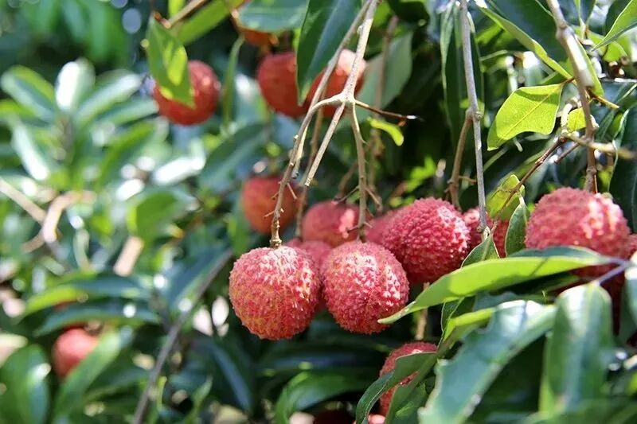 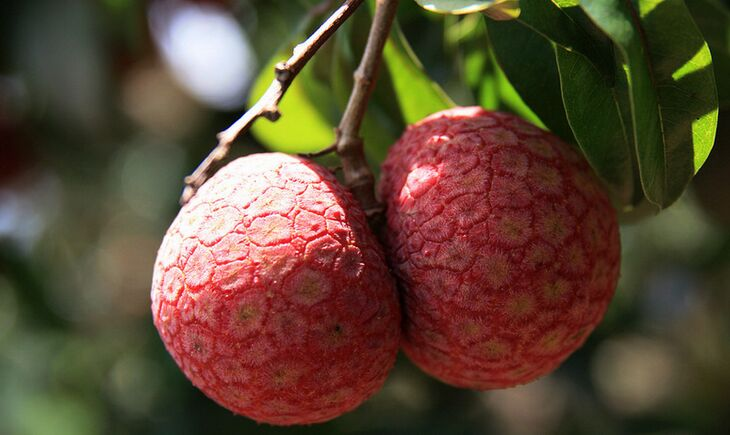桂平是广西有名的龙眼之乡，出产的龙眼以量多质好而闻名海内外。主栽品种大乌圆和广眼，果大肉厚，肉质脆嫩，味甜如蜜，鲜美爽口。大乌圆每公斤鲜果60至80个，特大的只有36至40个，宜鲜食和加工鲜肉糖水罐头。广眼每公斤鲜果80至120个，大的60至70个，宜加工桂圆肉、龙眼干。桂平龙眼及其各种制成品，向来博得区内外厂商和广大消费者的青睐。龙眼的经济价值很高，除鲜食外，还可加工干果。鲜龙眼晒干或烘干，叫龙眼干，可长期贮存食用。龙眼干去壳去核后，叫圆肉。广西特产桂圆肉驰名海内外，桂平出产的“桂圆肉”是其中的佼佼者。
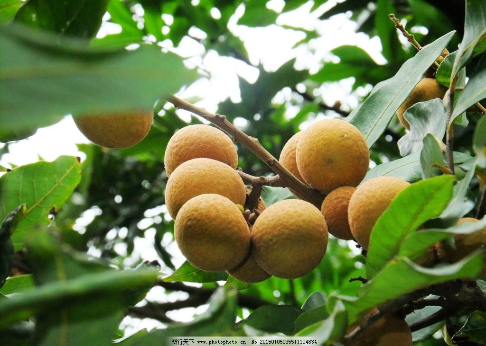 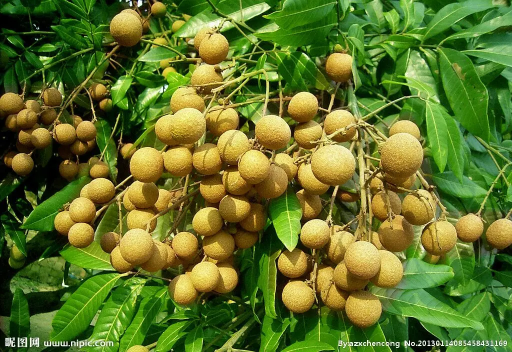罗秀米粉因产于桂平市罗秀镇一带而得名。是桂平最著名的特产之一，被誉为“中国一绝”。罗秀米粉的主产地为桂平市罗秀镇，现有21个村共120多个粉坊，年产量超过100多万公斤，产品供不应求，并远销广州、深圳等区内外以及港澳地区、东南亚一带。 罗秀米粉以条细匀称，外观洁白、油亮，质地柔韧，耐煮，细腻，润滑，食之爽脆而闻名遐迩。有人做过试验：将晒好的米粉摺成一卷，用力向墙壁猛掷20次而不碎；用刚切好的粉丝150根（重约200克）挂在横木上，能将70公斤重的小伙子吊起并在上面荡秋千。1985年，中央电视台、深圳都乐影视公司以《奇特的米粉》为题，将罗秀米粉摄入大型电视系列片《中国一绝》后，知名度更高。 罗秀米粉具有悠久的历史，清末民国初期就已成名。其手工制作工艺独特，以其山区特有的水质，配以当地所产的优质白米精制而成。整个生产流程包括选米、浸米、磨浆、蒸粉、晒粉、以及摺粉皮、切粉丝、晒粉丝、扎米粉等。 罗秀米粉可煮可炒，可根据不同口味烹制成肉汤粉、老友粉、螺丝粉、凉拌粉和炒粉等。冬天打火锅吃狗肉，以狗肉汤煮罗秀米粉，加少许辣椒、葱花、其味妙不可言。
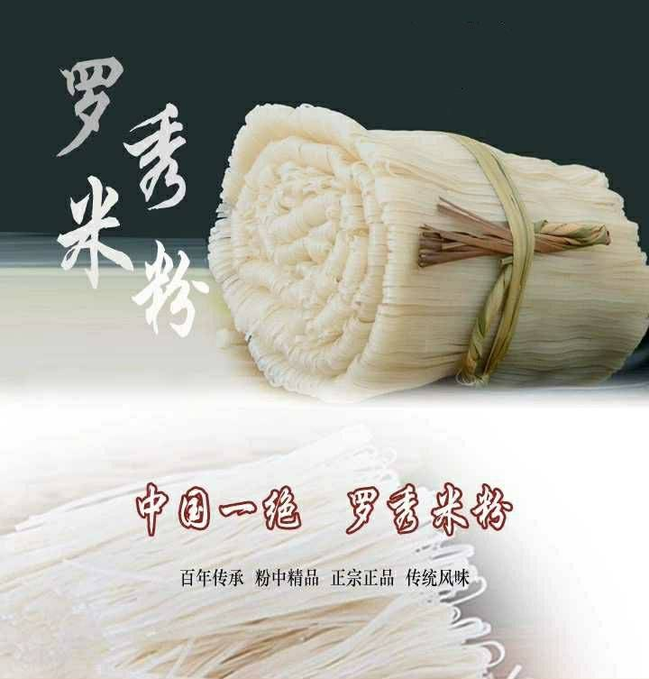 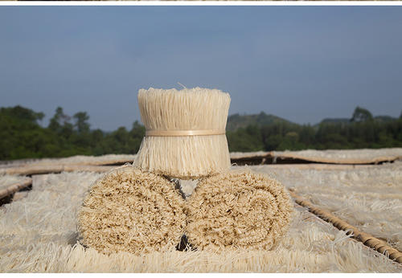桂平绿豆糕是桂平的美食代表。 桂平绿豆糕细嫩、甘滑、清香，甜而不腻，融糕点和清凉补品两特点于一体。绿豆糕如柠檬，嫩绿莹润，有如碧玉。品尝时佐之以西山茶，味道更佳。桂平的宏发祥绿豆糕畅销于广西、广东等大陆省份，并远销到、香港、澳门以及东南亚等地。
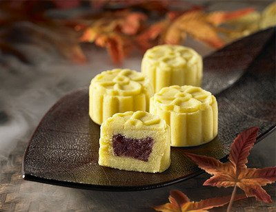 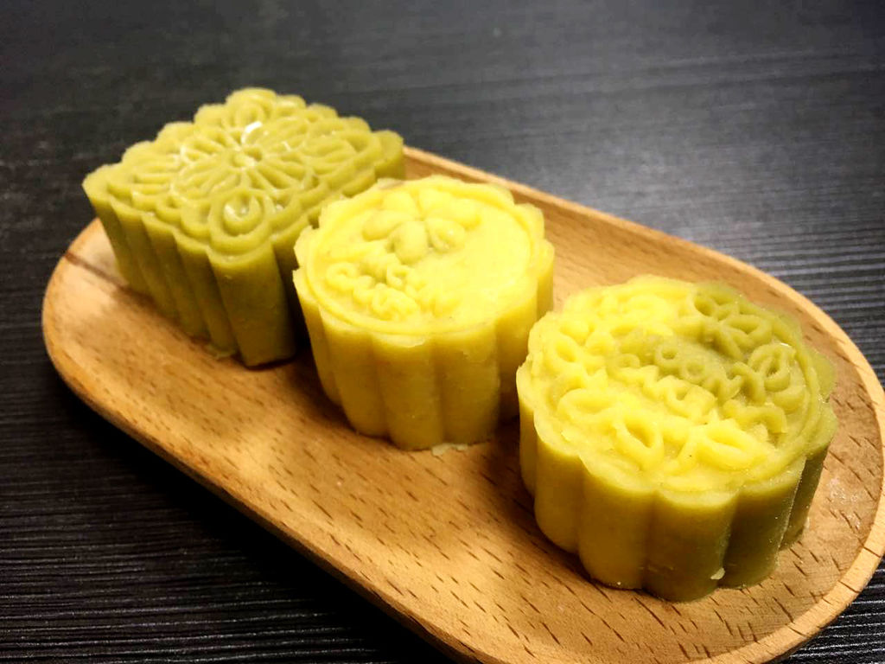桂平市社坡镇腐竹是在传统工艺基础上，选用东北精纯黄豆，采用先进的生产工艺和设备，严格按照国家的各项食品质量标准生产而成。腐竹产品为低脂肪高蛋白保健食品，其色鲜体薄，油亮清香，韧脆爽口，营养丰富，易于消化，增进食欲，性能不燥不寒，食法可繁可简，烹调任意调配，炸炖炒焖皆可。无论作主菜或配菜, 都可熟饪出色泽鲜美、香味扑鼻、酥脆嫩滑、风韵别致的荤、素佳肴。产品主要销往广东、香港等地，出口日本、东南亚一带。
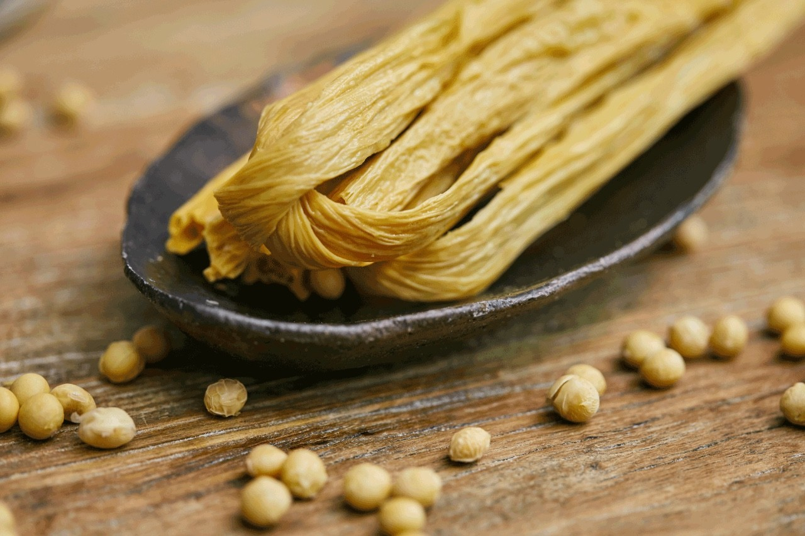 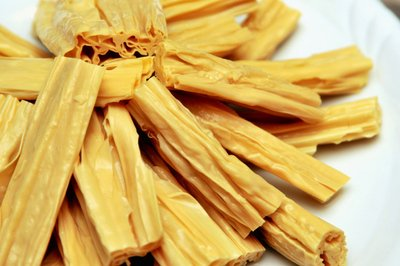金田淮山呈条状，色洁白，粉幼细，味甘香，性温补，既可入药，也可作副食品。淮山在中医学上称怀山，山药，有补脾养胃，生津益肺，补肾涩精的功能。用于脾虚食少，久泻不止，肺虚喘咳，肾虚遗精，带下，尿频，虚热，焦渴等症。金田淮山先前主要加工作主料的清补凉畅销港澳市场。将淮山配以莲子加工成粉，是老人及婴幼儿的营养佳品。
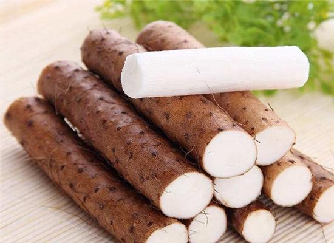 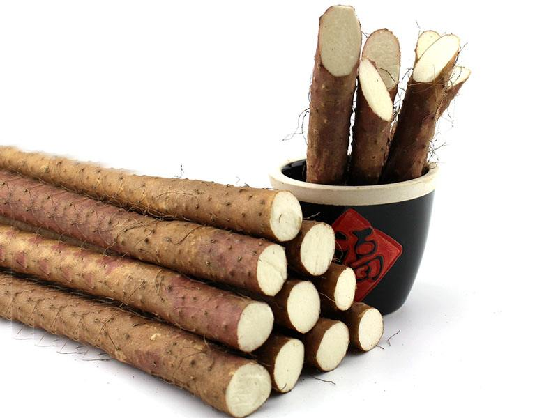乳泉井酒产自国家4A级重点风景名胜区、桂东南著名佛教圣地--桂平西山脚下。西山有乳泉，泉水终年不断，水质明净，清醇可口，富含对人体有益的钾、钠、钙、镁等多种微量元素，乳泉井酒就因用乳泉井水酿造味道香醇而得名。酒质窖香浓郁，绵甜醇厚，回味悠长，饮后口不干舌不燥，不上头，该酒高度而不烈，低度而不淡，不刺喉霸嗓，深受消费者喜爱。乳泉井酒到现在已经拥有了1000多年的历史，其前身称桂酒，早在宋代酿酒的工艺就已经初步形成；民国期间，酿酒生产得到迅速发展。因其既有茅台风味，又有乳泉幽香，独树一帜，被誉为"广西茅台"，于1988年参加意大利博览会展览，开始打入国际市场。先后荣获"国家轻工部优质产品""广西优质产品"称号，2004年荣获中国--东盟博览会指定用酒。
西山茶是全国名茶之一，深受广大顾客的欢迎，素有“山有好景，茶有佳味”之说。在《中国名茶志》广西篇中有陈爱新同志写有“桂平西山茶志稿”。西山茶条索紧细匀称，苗峰显露，色泽青黛，汤液碧绿，独具风味，被公认为绿茶中的上乘佳品。用西山乳泉水冲泡尤为清香爽口，提神消乏。西山茶除销本地外，还远销香港、澳门和南洋等地。
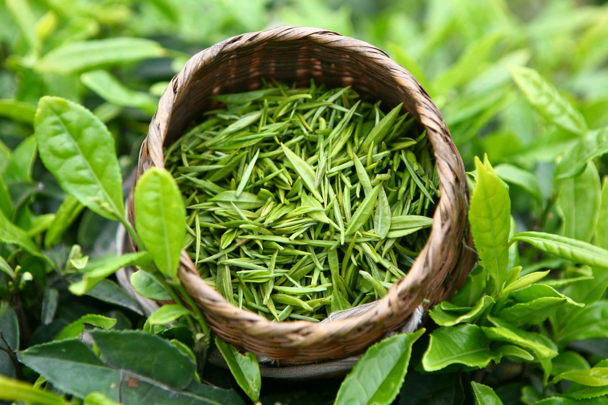 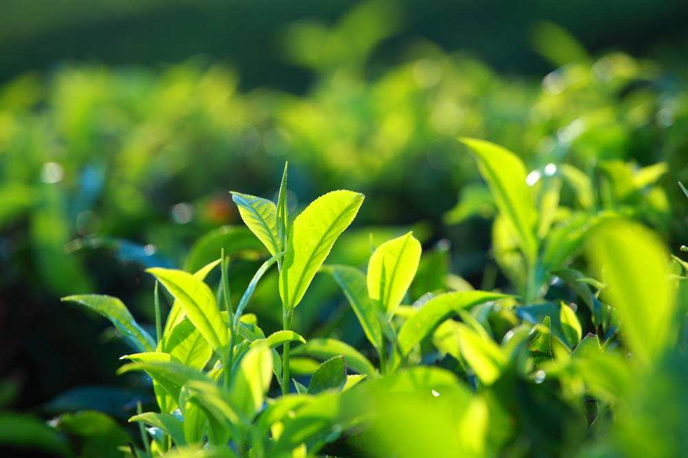据说清末太平天国农民起义军在金田、紫荆、江口一带活动时，由于当时的农民生活比较贫困，没有酒肉招待客人，所以当地家家户户都准备了香辣糟，盛情招待义军。这种糟用来送饭送粥，或当作佐料制配宴席佳肴，都很开胃。 香辣糟的制作方法：把5公斤上好糯米煮饭凉至28至36度左右，加入10只（约50克）研成粉末的酒饼拌匀，装入盘中用棉布盖紧，温度保持25度以上，3天后发出酒香就可待用。将剪了叶柄的指天椒、牛角椒成只洗净凉干切段共约2公斤，加300克熟盐，然后和糯米酒饭一起拌匀，放入洗净滴干水了的、特制的嘴凸肚大的瓦瓮里，先用平盖盖住，再用倒钟型的盖罩住，在凸咀的边缘加清水封口，以防漏气腐烂。半月后即变成香甜酸辣咸俱佳的食品。还有的将经过加工的豆角、木瓜、萝卜、菜头、黄瓜、蒜、姜、蕹菜杆等做料，制成各色香辣糟。
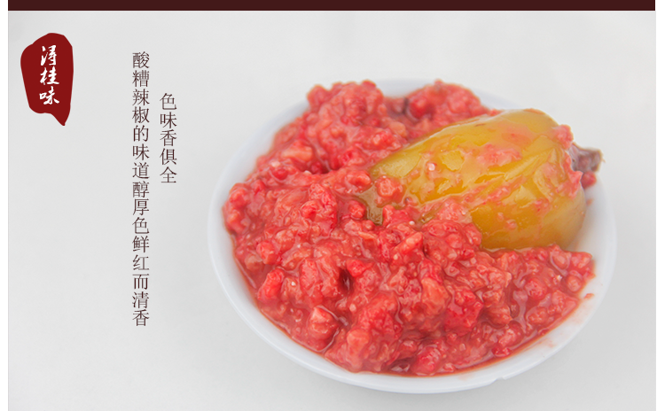 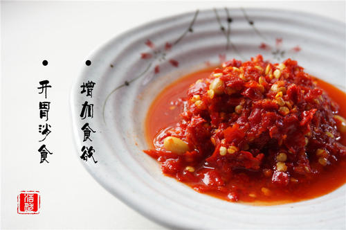紫荆竹笋顾名思义是产于桂平市紫荆镇，自古出名，以香、甜、脆、嫩广为食客喜好。紫荆竹笋尤以田心村双降屯的“双降笋”最出名，最大特点就是肉厚皮薄，笋丝呈米黄色，似玉石般晶莹剔透，不管怎样爆晒，用手抓捏始终感觉湿润柔软，口感特好，别具一格。紫荆竹笋生笋主要有：三月笋（春笋）、大头笋、钓丝笋，黑売笋等；干笋有：火烧笋、发酵笋、笋片、笋条、笋丝、笋衣、生晒笋（火锅笋）等等。还有用山泉水泡制的酸笋也另有一番风味。
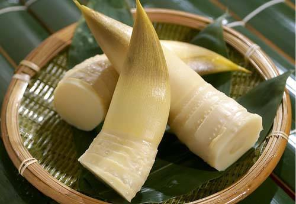 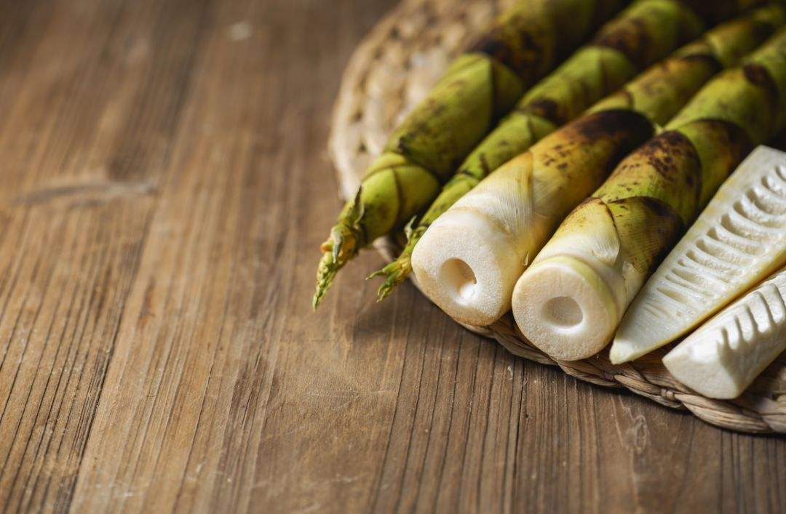2019-2020-1学期 web前端开发技术课程设计 周子湄 201709601028 软件Q179